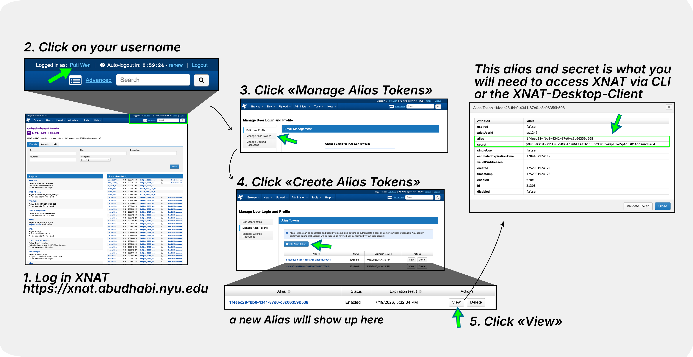

Accessing XNAT
This guide covers how to access the NYUAD XNAT platform, from initial account creation to project access.
Network Access Requirements
Important
XNAT at NYUAD is hosted within NYUAD’s network and is not accessible to the public.
On Campus: Users must be connected to NYU Abu Dhabi WiFi to access XNAT
Off Campus: Users must connect to the NYUAD VPN before accessing XNAT
VPN Setup:
VPN Address for Abu Dhabi:
vpn.abudhabi.nyu.eduFor installation and setup instructions, see the NYU VPN Guide
If you are unable to access XNAT, ensure you are connected to NYUAD WiFi or the VPN before attempting to log in.
Account Registration

- Step 1: Navigate to XNAT
- Step 2: Sign in with Google
Click the “Sign in with Google” button to begin registration.
- Step 3: Complete Registration
Enter information in the required fields.
- Step 4: Submit Registration
Scroll to the bottom and click “Register” to submit your account request.
Account Approval Process
- Authorization Required
All new accounts require administrator approval for security purposes.
- Approval Timeline
Your registration request is sent to the site administrator
Contact: admin.nyuad.xnat@nyu.edu
Processing time: Typically 1-2 business days
- Approval Notification
You’ll receive an email confirmation once your account is approved.
Project Access
Requesting Project Access
After your account is approved, you’ll need access to specific projects:
Identify Projects: Determine which research projects you need access to
Email Request: Contact us (admin.nyuad.xnat@nyu.edu) with:
Your name and email address
Specific project names you need access to
Brief explanation of your role/purpose
- Project Access Timeline
Project access is typically granted within 1 business day of request.
Signing In
For Existing Users
Once your account is approved:
Ensure Network Access: Make sure you are connected to NYUAD WiFi or the NYUAD VPN (
vpn.abudhabi.nyu.edu)Navigate to https://xnat.abudhabi.nyu.edu
Click “Sign in with Google”
Use your approved Google account credentials
Access your authorized projects
- Authentication Method
XNAT uses Google OAuth for secure authentication. You must use the same Google account that was approved during registration.
Account Management
- API Tokens
For programmatic access (scripts, automated downloads):

{kind=link}
Go to your profile → “Manage Alias Tokens”
Create new tokens as needed
Use tokens instead of passwords for security
- Password Requirements
No separate XNAT password needed - authentication is handled through Google OAuth.
- Session Management
Sessions remain active while using XNAT
Log out when finished for security
Re-authentication required after extended inactivity
Next Steps
After gaining access to XNAT:
Explore XNAT Navigation Basics to learn the XNAT interface
Set up Install XNAT Desktop Client for bulk downloads
Learn about Download via Browser methods
Review XNAT Pipelines Overview for data analysis